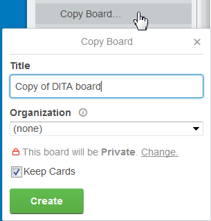
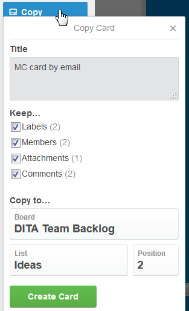

Handling items
Parent topic
:
Handling items
Copying items
To duplicate a board:
Open the board and click
Show Menu
>
Menu
>
Copy Board
.

Make the settings in the
Copy Board
dialog.
Type the title of the new board
Select the organization and eventually change the visibility settings.
Specify if the cards of the original board should be kept in the duplicate board.
Click
Create
.
To duplicate a list, open the list menu, click
Copy List
, type a name for the new list and click
Create List
.
The duplicate list is created next to the original list.
To duplicate a card:
Open the card and click
Copy
.

Make the settings in the
Copy Card
dialog.
Type the title of the new card
Select the items you want to keep from the original card: labels, members, attachments, comments.
Select the target board, list and position.
Click
Create Card
.
Checklists: When you create a new checklist on a card, you can choose to copy an existing one.